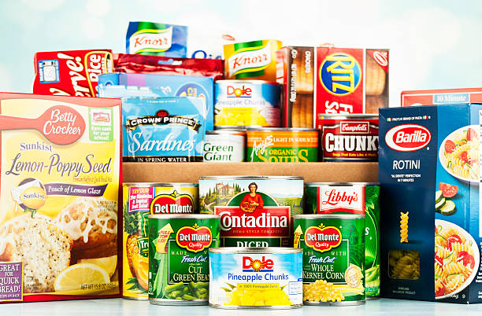
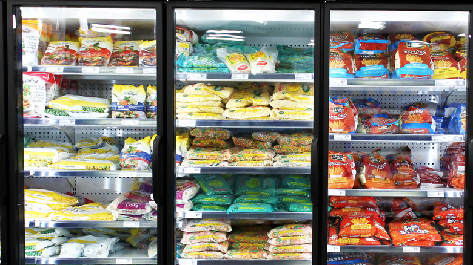

Organized Grocery List
Fresh Produce
Veggies
- Lettuce
- Cucumbers
- Spinach
Fruit
- Apples
- Bananas
- Strawberries
Fresh Herbs
- Basil
- Thyme
- Sage

Dry Goods
Pasta
- Spiral Noodles
- Spaghetti Noodles
- Flat Egg Noodles
Cereals
- Corn Flakes
- Rolled Oats
- Cream of Wheat

Frozen Foods
Frozen Vegetables
- Carrots
- Peas
- Pearl Onions
Frozen Meats & Fish
- Chicken Breasts
- Shrimp
- Cod Fillets
Ice Cream
- Carmel Swirl
- Chocolate
- Vanilla
